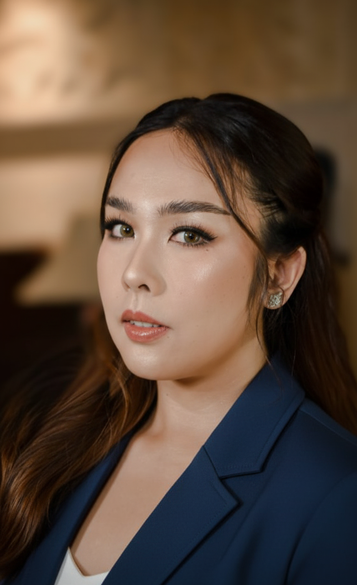

Founder of BaliDoc & Bali's Digital Health Ecosystem
Making world-class healthcare accessible to every international visitor in Bali — through six integrated digital health platforms serving tourists, expats, and digital nomads across Indonesia.

Bali welcomes over 6 million international visitors annually. Until BaliDoc, there was no seamless, English-language, digital-first healthcare solution. Tourists navigated language barriers, confusing pharmacy systems, and inaccessible doctors — often in moments of genuine need.
Each platform targets a specific segment of the Bali healthcare journey — together forming a comprehensive, defensible digital health infrastructure.
The flagship platform. Online medical consultations with top-tier professionals, prescription management, and medication delivery. Mission: ensure your health journey is seamless, personalized, and stress-free.
Visit BaliDocA dedicated telemedicine portal connecting patients directly with licensed, English-speaking doctors in Bali. Built for fast, frictionless access — especially for first-time visitors.
Visit BaliDoctorOnline pharmacy platform connected to local licensed pharmacies across Bali. Fast, reliable digital ordering and delivery — bridging the gap between prescription and doorstep for international residents.
Visit BaliPharmaComprehensive digital resource guiding international visitors through all healthcare options in Bali — from clinics and specialists to emergency services. The first port of call for any traveler who needs medical help.
Visit TouristHealthcareA simplified, travel-focused pharmacy platform for tourists — enabling safe, fast access to medications without navigating the complexities of the local system. Expanding the ecosystem's reach to the broadest possible user base.
Visit TouristPharmacyThe next frontier in personalised health optimisation. Evidence-based biohacking protocols, longevity strategies, and performance medicine for a global audience — merging cutting-edge science with the accessible, digital-first approach that defines the BaliDoc ecosystem.
Learn MoreI'm Meilinda Girsang — a serial entrepreneur, double-degree engineer, and MBA graduate who has spent two decades building and scaling businesses across Indonesia and Europe.
My foundation is technical: I hold a Bachelor of Computer Science and a Bachelor of Engineering (Double Major in Industrial Engineering & Information Systems) from BINUS University, graduating with High Merit. I understand how to build systems that scale.
Before founding BaliDoc, I built DePaC Group — a multi-vertical business in food, hospitality, service, and fashion retail — achieving 300% revenue growth in 3 years through digital-first marketing and operations.
In 2017, I moved to the Netherlands for my MBA at Maastricht University, specializing in Digital Economy, Big Data & Business Analytics, Industry 4.0, and Digital Transformation. A graduate internship at a high-technology medical equipment company planted the seed for what became BaliDoc.
That internship opened a career in enterprise systems architecture. Since 2019, I have worked as a Senior Systems Architect at LABB Consulting — designing and delivering regulated digital infrastructure for Rabobank, de Volksbank, and ASN Bank. The same engineering discipline that makes Dutch banking infrastructure reliable is what makes BaliDoc's platforms trustworthy at scale.
"The Netherlands taught me that the best markets are built on solving real problems at scale. Bali's healthcare gap wasn't just a problem — it was an underserved market of millions."
Bali receives millions of international visitors each year — and every single one of them is a potential patient. We've built the infrastructure. We're looking for the right partners to scale it.
Travel platforms, insurance companies, hotels, airlines, and healthcare networks looking to offer seamless medical coverage to their customers in Bali and across Indonesia.
Healthcare investors, Southeast Asia-focused VCs, and impact investors who see the compounding value of owning the digital health infrastructure for Bali's international visitor market.
Healthcare groups, telehealth platforms, or regional health systems looking to acquire a ready-built, brand-recognized digital health portfolio in Southeast Asia.
Whether you're a potential partner, investor, acquirer, or patient platform user — reach out directly. I respond personally to every serious inquiry.